Dino
Dino is a companion robot that helps children to ease the fear of medical treatment through empathy and game, and therefore optimizes their medical experience.

OVERVIEW
INTRODUCTION
Dino is a sympathetic companion robot that helps children ease their fear of going to the doctor. Dino can perceive children’s behavior through AI motion detection, tactile detection, etc., and therefore interact naturally with children; Dino guide children to play the role of doctors, which improve Children’s cognition of the diagnosis and treatment process, eliminate their resistance and fear. At the same time, Dino continues to give positive feedback to improve children’s self-esteem.
It is a course project of Design of Information Product（DIP）, taught by Prof. Sun Lingyun, ZJU. I got the highest mark (97 out of 100) for my contribution to the team as well as the 2020 DIP conference.
HIGHTLIGHTS
- Fully investigated child psychology and focused on subdivision scenario.
- Use empathy model to achieve treatment guidance and role exchange to enhance children’s medical knowledge
- Designed the appearance and structure of the product, delivered a half-function prototype with Arduino, Raspberry Pi or so. Empowered design with Artificial Intelligence.
MY ROLE
- Contributed the main concept of the product, conducted prototyping and took charge of shooting and editing video of the product.
- As a member of the conference affairs, responsible for the preparation and publicity of the conference
Apr. 2020- Jun. 2020 | 2.5 months | 7 people
BACKGROUND
A common phenomena
A study by York University found that most children have the experience of fear of injections. About 8% of children will be emotionally collapsed due to fear of injections, and they will experience vomiting and syncope. This will not only leave a psychological shadow for children, but also cause trouble for doctors and parents.
Why do children resist injections?
From the child’s own perspective, fear originates from the unknown. They often do not understand the upcoming diagnosis and treatment process, and do not understand the purpose of injection. In their world, the injection is pain, and the *parents and doctors lose children’s trust *.
DESIGN PROCESS
BRAINSTORM
How to reduce the fear of children？
We began to think about how to design a smart product to help children alleviate the fear of injections, improve the medical experience, and solve the problems of parents and hospitals.
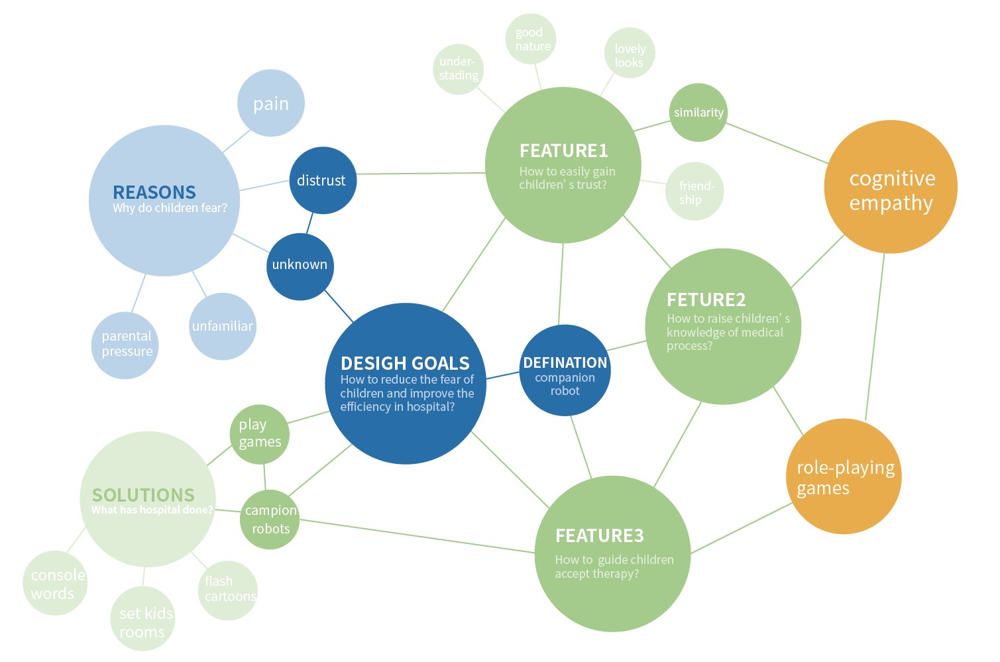Design goals:
- A character that can easily gain children’s trust
- Fun and natural interactions to raise children’s knowledge of medical process
- Actively guide children accept therapy
If we can use agents to interact with children, establish trust and emotional connections, guide children to think empathically, and understand the diagnosis and treatment process from the perspective of doctors, can children overcome the fear of the unknown?
THEORY
The proposal of empathy model
Researches and cases shows that the ability of empathy can activate children’s prosocial behavior and help them adjust emotions. Based on the classic human empathy model and the agent empathy model in the literature, we organize and refine The theoretical basis of our product: three-phase empathy model of empathy triggering-empathy evaluation-empathy response, which guides the specific design in usage scenarios.
DEFINITION
How to achieve our design goals?
According to the empathy model, the interaction between Dino and children can be roughly divided into three sections.
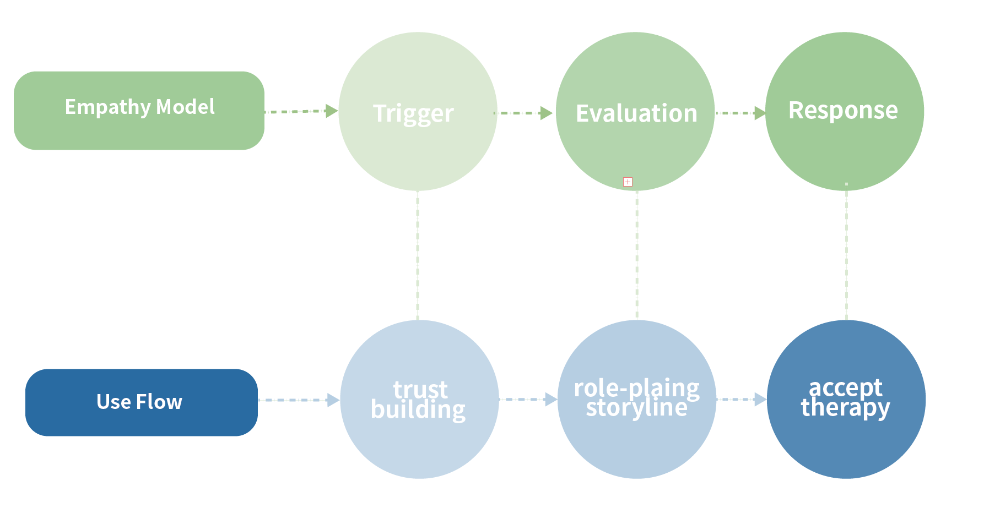establish trust
In the story, Dino is ill by the attack of black magic. When a child who resists the treatment and is afraid of injection sees Dino, their fear and pain provide emotional clues and trigger empathy.
role reversal
Dino not only has a cute and intimate appearance, a childish voice in the milk and lively expression, but also fears injections as much as children. Similarity allows children to involuntarily get close and produce emotional connections. Injecting Dino to help it overcome the virus, which allows children to experience the medical process in advance, realizes that injections are not so terrible.
Guide to receive treatment
Under the guidance of Dino, the children understood the medical process and transformed the fear and anxiety into agreement with friends and courage to overcome difficulties. Face the injection bravely.
SKETCH&PROTOTYPE
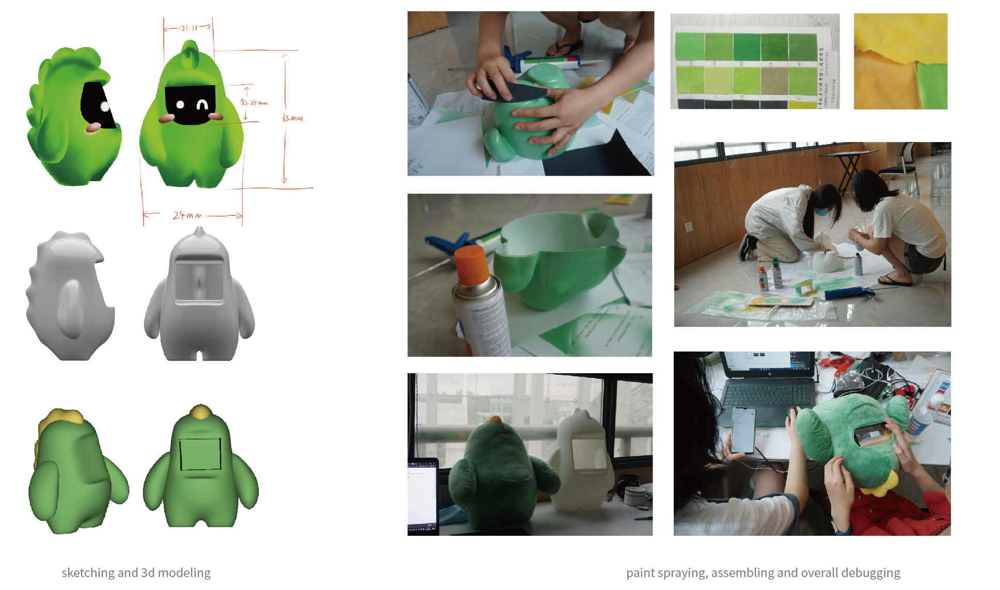TECHNOLOGY
In order for Dino to better achieve the effect of inspiring empathy, Dino needs to communicate and interact with children in a natural way and convey information to children in a vivid form.
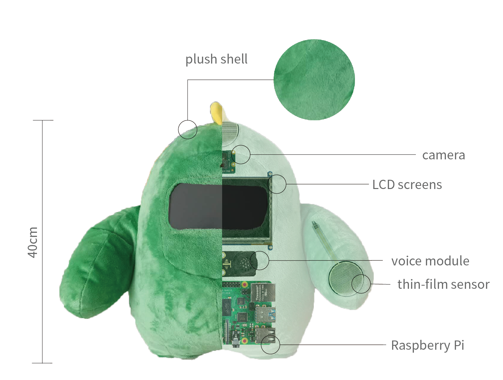In terms of interactive input, we applied a motion detection module and a touch sensing module. We call the face detection API of the EasyDL platform to obtain the movement of the key points of the child’s head; through the sensor to detect the child’s touch on different positions of Dino’s body. In this way, Dino can perceive the child’s behavior, understand the child’s psychological process and make feedback.
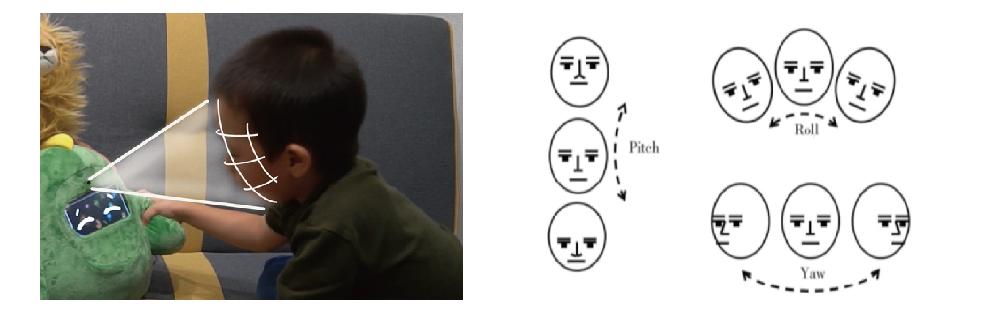 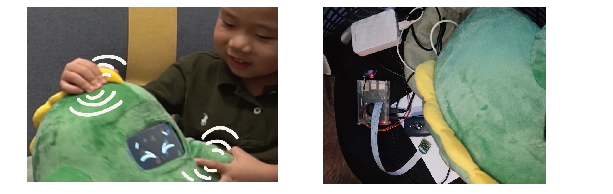In terms of interactive output, we have adopted an audio-visual combination. Dino’s language and sound style are similar to those of children 4-5 years old, and his telling and guiding methods are popular and vivid. At the same time, Dino can play more than ten kinds of lively and cute expression animations, fully express emotions in different situations, and give children emotional feedback.
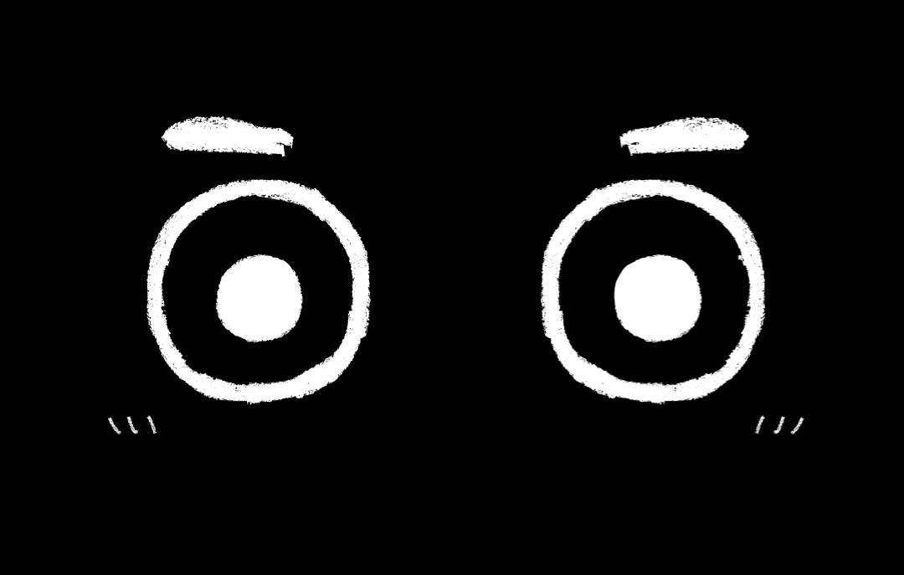 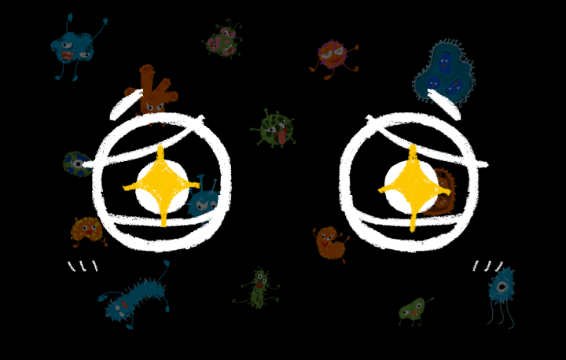
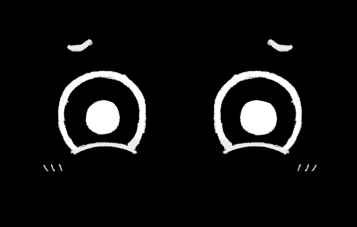
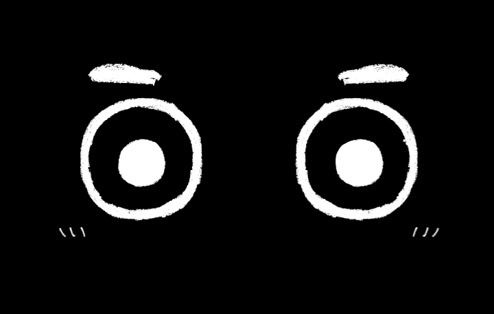
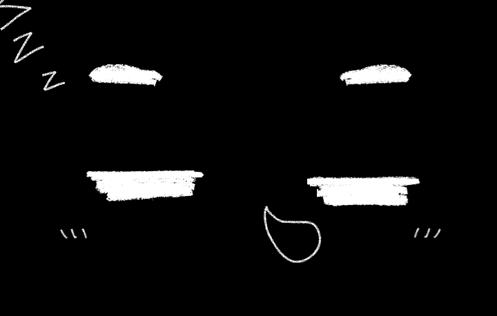
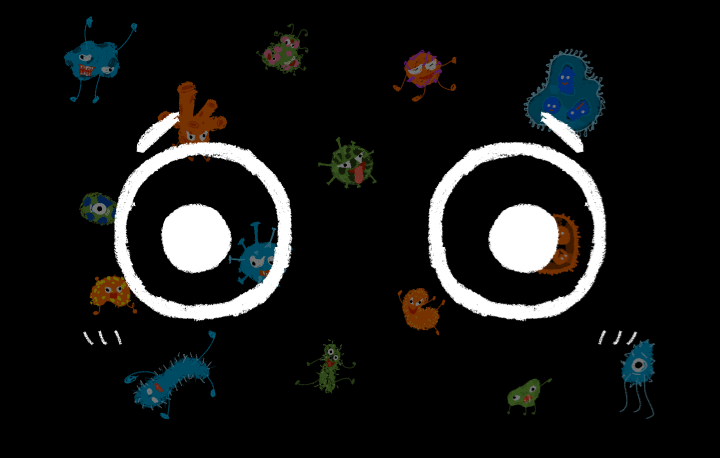
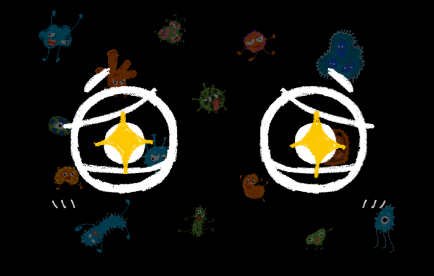
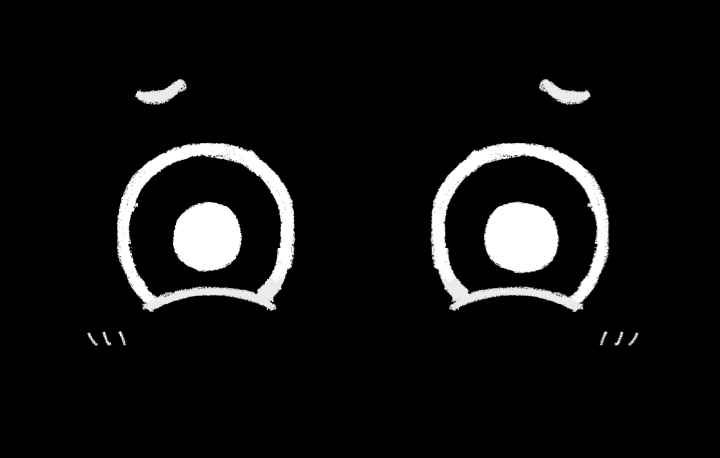
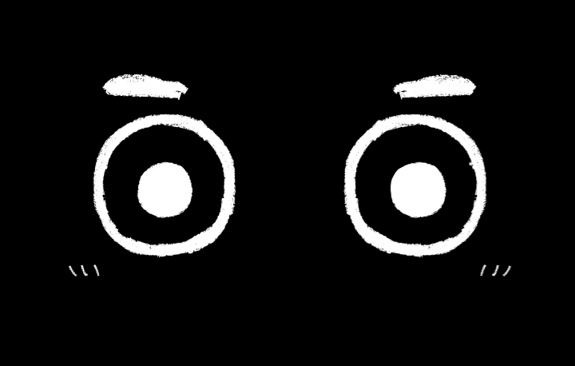
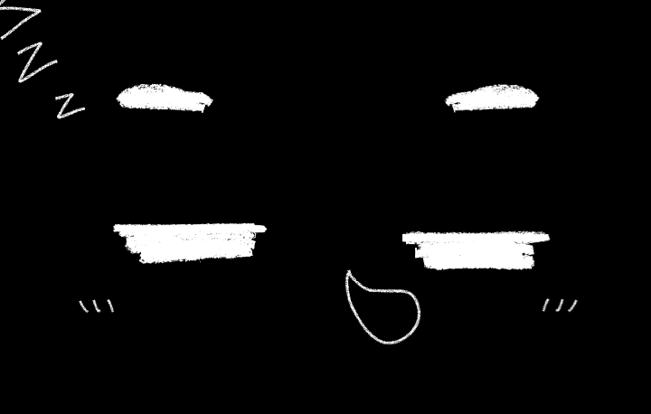
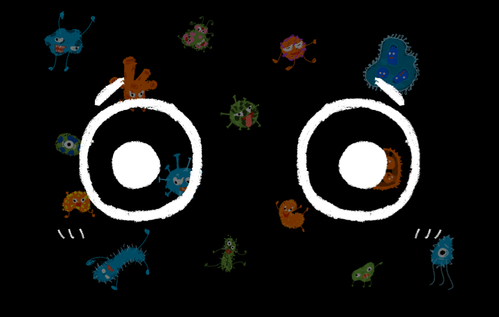
Output
Output
Product introduction video
bilibili link:https://www.bilibili.com/video/BV1Ev411B7d7/
How to use
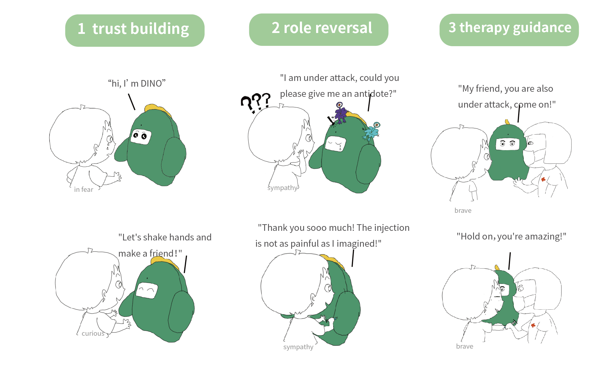Launch
Digital Information Product Conference has be held every year since 2015. 2020 is a special year， so we have launched live conference online, which posed new challenges to speakers and organizers.
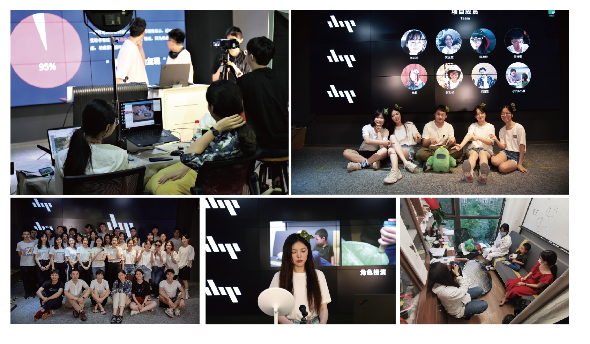2020 DIP Conference
bilibili link:https://www.bilibili.com/s/video/BV1xv411B72d
Conclusion
The course not only requires students to have a solid professional foundation, but also requires students to focus on high-quality information sources, invest a lot of time and energy to discover user’s needs , explore technical edges, make prototypes and publish results. This process can well reflect the comprehensive ability of a student.
In the team, I’m responsible for promoting product concepts, 3D modeling, proofing, writing & shooting videos, speaking on behalf of our team and assist in the preparation team of the conference.
In this project, we encountered various difficulties, but with continuous running-in, we have successfully solved and obtained a high evaluation. My teamwork ability, fast learning ability, and innovative design thinking have all been greatly improved.
Thanks goes to all my teammates, teachers and friends helped Dino.
——————–♥———————————————————————————————————————————–
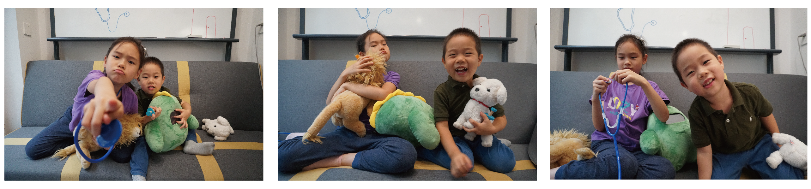